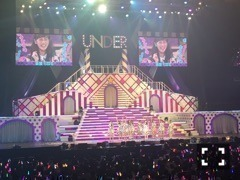
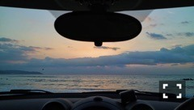

| 2016/10 27 Thu | 斎藤ちはる クリスマスライブ決定！(´>∀<｀)ゝ |
ちはるーむへようこそ！
今日、乃木坂の公式ラインにて
クリスマスライブの日程が
発表になりました\( ˆ ˆ )/
12月6、7、8、9日に日本武道館で行ないます。
6日8日は選抜単独公演、
7日9日はアンダー単独公演です！
アンダー単独公演を去年同様2日間、
武道館で行なえる事が本当に嬉しい(﹡ˆ ˆ﹡)
好評だった去年以上のライブを
魅せられるように！
16thアンダーメンバーで頑張ります！
選抜単独公演は乃木坂史上初の試みなので
どんなライブになるか気になる〜◎
12月の平日ってことなので
東京から遠くに住んでる方や
学生の方、仕事が遅くまである方等々
中々予定を合わせづらいとは思いますが(> <)
もしよかったらお越しください！

写真は去年のアンダーライブの、
全員センター！という企画で
「おいでシャンプー」の
「ちはるちゃんしか」コールを皆さんに
していただいてるときの写真。
なんて嬉しそうな顔！！笑
でも本当に嬉しかったし楽しかったんだ〜♡
-------------------------♡
#chihashot

家族でドライブしたときに
車の中から撮った朝日の写真。
朝日はまだ肉眼では確認できないけど
じわじわと空が明るく、オレンジ色に
輝いて見えるのが本当に綺麗。
車の中から、窓越しに見ることによって
まるで映画のワンシーンを観ているかのような
錯覚に陥る。
お気に入りの一枚です！！
-------------------------♡
♬ ChihaMusic
「真っ赤な空を見ただろうか」BUMP OF CHICKENさん
自分と向き合って、
前を向いて進んでいこうって思える曲。
"一人で見た真っ赤な空
君もどこかで見ただろうか
僕の好きな微笑みを
重ねて浮かべた夕焼け空"
私夕焼け空って大好き。
寂しい気分にもなるけど、
でも空が燃えているように見えて
頑張ろうって思えるから。
今日の日中と夜の寒暖差が大きすぎて
風邪引くかと思った〜(> <)
寒かった〜(> <)
冬がもうすぐ近くに。
でもツインテールがわりと好評で
嬉しくて胸はポカポカでした。
おやすみ〜
斎藤ちはる